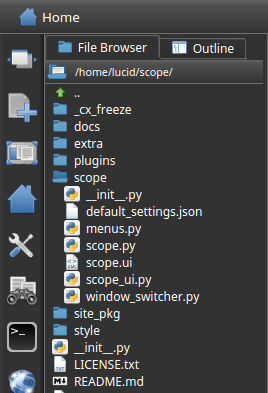

Click on the new menu button on the left toolbar
Choose from one of the favorite file types
or
Select an editor and open the desired file type in that editor
A file can also be opened by double clicking on the file in the File Browser plugin.

If you would like to launch (double click on) a file from the operating system and open it with Scope, it will have to be set up from the operating system settings (for now). Usually, this can be done by right clicking on the file and choosing the Open With option and then setting Scope as the default program.